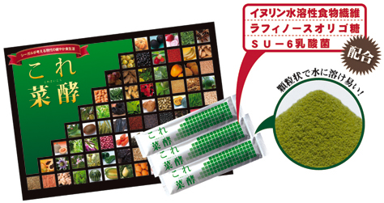

【酵素素材】
のり. 昆布. わかめ. ローズマリー. カツアバ. カルケージャ. 紫イペ. すぎな（カヴァリニャ）. シャペウ・デ・コウロ. パタ・デ・ヴァカ. パフィア. レモン・グラス. アニス. マテ. ステビア. ガラナ. 綿実. ペドラ・ウメ・カ. キャッツクロー. シナモン. ショウガ. ハトムギ. アガリクス. アマチャズル. クローブ. ガジュツ. ウイキョウ. レンコン. ごぼう. 玄米. オーツ麦. とうもろこし. 大麦. えんどう豆. 小豆. ブラジル豆（インゲン豆）. 紫ブラジル豆（紫インゲン豆）. 黒胡麻. キビ（黍）. 大豆. ポップコーン（爆裂種）. ライ麦. 黒ブラジル豆（黒インゲン豆）. エジプト豆（ひよこ豆）. レンズ豆. オレンジ. パイナップル. バナナ. リンゴ. パパイア. グァバ. メロン. アボガド. ドライプルーン. アセロラ. レモン. レーズン. マンゴー. スターフルーツ. スイカ. カシューナッツ. パラナッツ. クダモノトケイソウ.キウイフルーツ. 洋なし. さつまいも. しいたけ. チコリ. 大根. キャベツ. ムイラプアマの葉. カムカム. ピカオプレト. カボチャ. マンジョッカ（キャッサバ）. トマト. コウベマンテイガ（青菜）（ケール）. ピーマン. 赤カブ. ヤーコン. アサイー. 人参
のり. 昆布. わかめ. ローズマリー. カツアバ. カルケージャ. 紫イペ. すぎな（カヴァリニャ）. シャペウ・デ・コウロ. パタ・デ・ヴァカ. パフィア. レモン・グラス. アニス. マテ. ステビア. ガラナ. 綿実. ペドラ・ウメ・カ. キャッツクロー. シナモン. ショウガ. ハトムギ. アガリクス. アマチャズル. クローブ. ガジュツ. ウイキョウ. レンコン. ごぼう. 玄米. オーツ麦. とうもろこし. 大麦. えんどう豆. 小豆. ブラジル豆（インゲン豆）. 紫ブラジル豆（紫インゲン豆）. 黒胡麻. キビ（黍）. 大豆. ポップコーン（爆裂種）. ライ麦. 黒ブラジル豆（黒インゲン豆）. エジプト豆（ひよこ豆）. レンズ豆. オレンジ. パイナップル. バナナ. リンゴ. パパイア. グァバ. メロン. アボガド. ドライプルーン. アセロラ. レモン. レーズン. マンゴー. スターフルーツ. スイカ. カシューナッツ. パラナッツ. クダモノトケイソウ.キウイフルーツ. 洋なし. さつまいも. しいたけ. チコリ. 大根. キャベツ. ムイラプアマの葉. カムカム. ピカオプレト. カボチャ. マンジョッカ（キャッサバ）. トマト. コウベマンテイガ（青菜）（ケール）. ピーマン. 赤カブ. ヤーコン. アサイー. 人参
体が喜ぶ栄養素をバランス良く摂取したい...。そんなあなたの為の新しいサプリメント
『これ菜酵』は、「アメリカ合衆国上院栄養問題特別委員会報告書」（通称「マクガバン・レポート」）の内容に基づいてコンセプトを発案し開発されました。酵素は、82種類の素材から生まれた「ブラジル酵素」を使用しました。 これは、（2000年に世界自然遺産に登録）南アマゾンの化学汚染のない地域で、大自然の恵みである、農薬や化学肥料を使わない野菜・果物・野草・ハーブ等を、乳酸菌・酵母による発酵と、その農地に住み着いている「酢酸菌」の働きにより三次発酵させる過程を経る、 いわば「マクロビオティック」の食材をそのまま発酵熟成させるような、製造に大変手間ひまをかけた酵素なのです。
『これ菜酵』は、「アメリカ合衆国上院栄養問題特別委員会報告書」（通称「マクガバン・レポート」）の内容に基づいてコンセプトを発案し開発されました。酵素は、82種類の素材から生まれた「ブラジル酵素」を使用しました。 これは、（2000年に世界自然遺産に登録）南アマゾンの化学汚染のない地域で、大自然の恵みである、農薬や化学肥料を使わない野菜・果物・野草・ハーブ等を、乳酸菌・酵母による発酵と、その農地に住み着いている「酢酸菌」の働きにより三次発酵させる過程を経る、 いわば「マクロビオティック」の食材をそのまま発酵熟成させるような、製造に大変手間ひまをかけた酵素なのです。